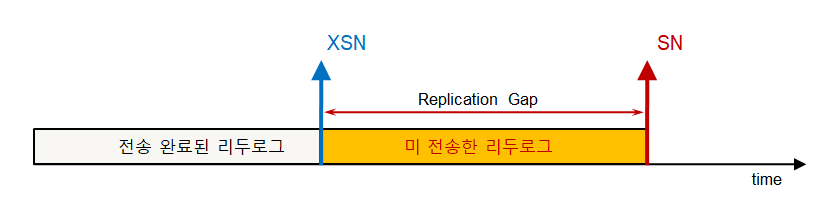

개요
Altibase 제품은 고객 서비스 운영에 있어 핵심이 되는 DBMS 소프트웨어이다. 가능한 무정지 서비스를 위해 최대한의 안정성을 보장해야 하지만 시스템의 상황이나 사용자의 실수, 또는 제품의 크리티컬 버그 등으로 인해 장애가 발생할 가능성을 100% 회피할 수 없다.
본 문서는 서비스가 불가능한 상황의 장애가 발생했을 경우 Altibase 기술지원을 위해 사용자가 수행할 최소한의 행동 절차를 설명하고 있다. 최단 시간의 장애 복구를 위해 사용자는 본 문서를 꼭 숙지하길 권장한다.
CPU의 이상 급증 현상이나 락에 의한 대기 및 성능 지연 부분 등은 별도의 튜닝 가이드 또는 운영자 가이드 문서를 통해 확인할 수 있으며 본 문서에서는 다루지 않는다.
장애 유형에 분류
장애의 정의
Altibase는 장애의 정의를 긴급 장애 / 비 긴급 장애로 분류한다. 이러한 장애 유형의 정의는 사용자와 협의가 되어야 할 사안이지만 일반적으로 다음과 같이 분류한다.
분류
설명
긴급 장애
시스템 또는 Altibase 제품의 문제로 서비스가 지속되지 못하는 상태
비 긴급 장애
시스템 또는 Altibase 제품의 문제 혹은 다른 이유로 서비스는 연속적이나 일부 문제가 발생할 소지가 있는 상태
긴급 장애는 유지 보수 계약에 의거해 기술지원을 수행한다. 다만, 비 긴급 장애는 사용자가 충분히 대처할 수 있는 여러 가지 가이드를 제공하여 사용자의 직접적인 1차 대응을 필요로 하며 이에 대한 기술적인 지원을 제공하고 있다.
긴급 장애
긴급 장애는 다음 2가지로 상황에서 정의한다.
유형
정의
시스템 비정상
시스템의 하드웨어 / 소프트웨어 문제로 동작하지 않는 경우
Altibase 비정상
Altibase 제품 버그로 인하여 동작하지 않는 경우
위 2가지 요인으로 인하여 고객의 서비스가 중단되는 경우를 긴급 장애로 정의한다.
이와 같은 상황이 발생하면 사용자는 다음과 같은 정보를 Altibase에 제공하여야 한다.제공 정보
획득 방법
시스템 로그
문서의 내용 중 "시스템 문제로 인한 장애" 부분을 참고
Altibase 트레이스 로그
$ALTIBASE_HOME/trc에 위치한 모든 파일
장애 시점의 특이 사항
장애 발생 시점의 이상 징후 및 DB 작업 내역
위 정보를 Altibase 기술지원 홈페이지 http://support.altibase.com를 통해 Altibase에 전달할 경우 담당 엔지니어가 도착하기 전까지 Altibase 기술본부 내부에서 문제에 대한 원인 파악을 하는데 많은 정보로서 활용될 수 있다.
($ALTIBASE_HOME은 시스템에 설치된 Altibase 제품의 설치 경로를 의미한다.)Shell> echo $ALTIBASE_HOME
위 명령은 Altibase를 설치한 사용자 계정에서 실행하면 설치된 경로를 확인할 수 있다.
긴급 장애 발생 시 사용자의 행동 절차
먼저 Altibase의 프로세스 존재 여부를 확인한다.
Shell> ps -ef | grep "altibase -p boot from" | grep -v grep
정상 구동 중이면 위 명령으로 하나의 Altibase 프로세스가 확인된다.
만일 정상 구동 상태라면 다음의 명령으로 접속 가능 여부를 확인한다.Shell> is 또는 isql –u [db user id] –p [db user password] –s 127.0.0.1 –port [port_no]
ex) isql -u sys -p manager -s 127.0.0.1 -port 20300
이 명령은 Altibase 사용자 환경이 적용된 상태에서 사용 가능하다.- 만일, 1번의 절차로 Altibase 프로세스가 확인되지 않거나 접속이 안 된다면 다음과 같이 조치한다.
- 필요한 로그 및 정보를 취합하여 http://support.altibase.com 으로 로그 및 정보를 첨부하여 문의하도록 한다. (긴급 장애에 명시된 제공정보 참고)
- Altibase 기술지원센터로 연락한다. (02-2082-1114)
- 필요한 로그 및 정보를 취합하여 http://support.altibase.com 으로 로그 및 정보를 첨부하여 문의하도록 한다. (긴급 장애에 명시된 제공정보 참고)
Altibase 를 재구동 해야 할 경우 다음과 같이 Altibase를 설치한 사용자 계정으로 명령을 수행한다.
Shell> server kill (1번에서 이미 종료된 것이 확인되면 수행할 필요가 없다.)
Shell> server start
첫 번째 명령은 Altibase를 강제로 종료시키는 명령이다. 두 번째 명령은 Altibase를 구동시키는 명령이다.위 명령은 반드시 Altibase를 설치한 사용자 계정으로만 수행할 수 있다.
장애 유형에 따른 절차
접속 불능 장애
서버 또는 Altibase 프로세스가 정상적으로 운용되고 있는 상태에서 DB에 접속이 안 되는 경우가 있을 수 있다.
이와 같은 상황은 다음 5가지 유형이 있을 수 있다.유형
설명
사용자 계정의 제한
사용자 계정의 설정 중 File descriptor의 개수를 넘어선 접속이 시도되는 경우로
$ALTIBASE_HOME/altibase_boot.log에 다음과 같은 유형의 에러 로그가 기록될 수 있다.ERR-01052(errno=24) Unable to invoke open() function on [~~~]
ERR-71016(errno=24) Failed to invoke a system function, accept() Dispatcher failed callback
Altibase Hang 상태
시스템 또는 Altibase의 문제로 인하여 접속 불능 상태인 경우로
DB의 접속 불능 및 응답이 없는 경우 또는 신규 접속이 안 되는 경우들을 의미한다.접속 시도의 오류
접속을 시도하는 서버의 IP / Port번호 / Password등을 잘못 기입한 경우와
패스워드관리 정책에 따른 잠금상태 및 TCP 접속제한이 설정되어 있는 경우일 수 있다.ERR-50032 : Client unable to establish connection.
ERR-31010 : User not found
ERR-4102E : Invalid password
ERR-31370 : The account is locked. ERR-410E3 : The user cannot connect using TCP. 네트워크 장애
랜카드 또는 네트워크 설정의 문제로 인한 경우
디스크 공간 부족
디스크 공간 부족에 의해 쓰지 못하는 경우
ERR-01052(errno=24) Unable to invoke open() function on [~~~]
ERR-01052(errno=24) Unable to invoke write() function on [~~~]
앞서 설명한 5가지 유형 중 아래 4가지는 사용자 또는 하드웨어적인 오류이며 1차적으로 다음의 사항을 먼저 확인하도록 한다.
유형
확인 사항
사용자 계정의 제한
사용자 계정의 제한은 ulimit –n 의 결과를 확인하고 이 값을 크게 하여 Altibase를 재구동 하는 방법으로 해결한다.
일반적으로 file descriptor 값을 unlimited로 설정할 것을 권장하며 최소 4096 이상으로 설정해야 한다.
접속 시도의 오류
접속 시도의 오류는 접속을 시도하는 설정 부분을 다시 확인해야 한다.
입력한 사용자 계정 및 비밀번호 또는 접속할 IP주소를 잘못 입력하지 않았는지 여부와 함께
$ALTIBASE_HOME/conf/altibase.properties 에 설정된 PORT_NO와 다른 값으로 시도하지 않는지 확인한다.
네트워크 오류
netstat 을 통해 패킷 오류 등이 발생하는지 여부를 먼저 확인하고
다른 장비에서 Altibase가 설치된 장비로의 정상적인 ftp/telnet등의 접속이 가능하고
패킷 송수신에 있어 기존에 비해 현저한 성능 저하가 없는지 먼저 검사해야 한다.
디스크 공간 부족
df (bdf)와 같은 명령을 통해 디스크 사용량을 확인한 후 부족한 디스크 공간을 확충하도록 한다.
시스템 또는 Altibase Hang으로 의심 가는 상황은 정상적으로 Altibase 프로세스가 존재하지만 접속 시도가 실패하고 기존에 접속된 DB세션도 아무런 응답이 없는 경우를 의미한다.
이 경우는 다음의 정보를 즉시 취합하여 Altibase로 기술지원 요청을 하도록 한다.OS
Hang정보 취득 방법
SUN
/usr/sbin/pstack –F process_id > 1.txt
/usr/sbin/pstack –F process_id > 2.txt
/usr/sbin/pstack –F process_id > 3.txt
위 명령을 30초 간격으로 각각 순서대로 실행HP
PA_RISC에서는 지원하지 않으나 IA계열들은 다음과 같이 수행한다.
/usr/ccs/bin/pstack process_id > 1.txt
/usr/ccs/bin/pstack process_id > 2.txt
/usr/ccs/bin/pstack process_id > 3.txt
위 명령을 30초 간격으로 각각 순서대로 실행AIX
/usr/bin/procstack –F process_id > 1.txt
/usr/bin/procstack –F process_id > 2.txt
/usr/bin/procstack –F process_id > 3.txt
위 명령을 30초 간격으로 각각 순서대로 실행Linux
커널 버전이 낮은 경우 해당 명령이 없을 수 있다.
/usr/bin/pstack process_id > 1.txt
/usr/bin/pstack process_id > 2.txt
/usr/bin/pstack process_id > 3.txt
위 명령을 30초 간격으로 각각 순서대로 실행
pstack 등의 명령은 지정된 process_id를 갖는 프로세스의 모든 쓰레드가 현재 어떤 상태인지를 자세하게 보여 준다. 따라서, 문제를 해결하기 위한 중요한 정보로 활용될 수 있다.
(긴급 장애와 마찬가지로 시스템 로그와 Altibase 트레이스 로그를 함께 전달하도록 한다.)
리소스 부족으로 인한 장애
리소스라 함은 물리적인 메모리/디스크 공간부터 Altibase가 사용하는 논리적인 공간을 모두 포함한다. 운영 중에 발생할 수 있는 상황 별로 대응할 방법을 설명한다.
테이블 스페이스의 부족 상황
유형
진단 방법
메모리 테이블스페이스의 부족
메모리 테이블스페이스가 부족한 경우 아래와 같은 오류가 발생한다.
[ERR-110F1 : Unable to extend the tablespace(XXXXX) because the current size of tablespace(4194304K)
becomes larger than MAXSIZE(4194304K) of the tablespace.]디스크 테이블스페이스의 부족
디스크 테이블스페이스가 부족한 경우 아래와 같은 오류가 발생한다.
[ERR-11123 : The tablespace does not have enough free space ( TBS Name :XXXXX ).]
Altibase는 메모리/디스크DB를 모두 지원하기 때문에 각각의 사용량을 모니터링 해야 한다. 만일, 예기치 못한 테이블스페이스의 부족으로 위와 같은 오류가 발생하면 다음과 같이 조치 한다.유형
조치 방법
사용자 메모리
테이블스페이스의 부족ALTER TABLESPACE [테이블스페이스명] ALTER AUTOEXTEND OFF ; ALTER TABLESPACE [테이블스페이스명] ALTER AUTOEXTEND ON MAXSIZE 1G ;
위 명령을 순서대로 실행한다.
테이블스페이스 명은 앞에서 오류 메시지 발생시에 명시되기 때문에 해당 테이블스페이스 명을 명시한다.
MAXSIZE는 현재의 MAXSIZE보다 크게 설정해야 한다.SYS_TBS_MEM_DATA/
SYS_TBS_MEM_DIC
테이블스페이스 부족 또는
ALTER TABLESPACE명령으로
해결이 안될 경우SYS_TBS_MEM_DATA / SYS_TBS_MEM_DIC 테이블스페이스에 위와 같은 오류가 발생하면
위와 같은 조치 방법으로 해결할 수 없다.
또한, 전체 메모리 테이블스페이스의 합산량이 이미 MEM_MAX_DB_SIZE값을 초과한 경우도 해결할 수 없다.
이런 경우에는 해당 테이블스페이스에 존재하는 불필요한 테이블의 데이터를 정리한 후 compact명령을 수행하거나
이 방법이 안될 경우 $ALTIBASE_HOME/conf/altibase.properties 파일 안에
MEM_MAX_DB_SIZE값을 더 증가시킨 후에 ALTIBASE를 재구동 해야만 한다.DELETE FROM [테이블명] ; TRUNCATE TABLE [테이블명] ; ALTER TABLE [테이블명] COMPACT ;
디스크 테이블스페이스의 부족
ALTER TABLESPACE [테이블스페이스명] ADD DATAFILE 'abcd.dbf' SIZE 1G AUTOEXTEND OFF ;
테이블스페이스 명은 앞에서 오류 메시지 발생시에 명시되기 때문에 해당 테이블스페이스 명을 명시한다.
데이터파일의 이름은 사용자가 네이밍 룰에 맞게 지정하며
SIZE는 동일한 테이블스페이스를 사용하는 다른 데이터파일의 크기를 참고하여 적절하게 지정한다.테이블스페이스의 부족으로 인한 오류에 대한 조치 방법은 긴급으로 취하는 조치이며 사후에 어떠한 이유로 테이블스페이스가 갑자기 증가하게 되었는지 확인해야 한다. 각 테이블스페이스에 속한 DBMS객체들의 사용량을 확인하여 변동된 내역을 확인하고 원인을 제거 해야 한다. 테이블스페이스의 각 객체들의 사용량은 『Altibase 모니터링 쿼리 가이드』에 자세히 설명하고 있다.
물리적 디스크 공간의 부족
물리적 디스크가 부족할 경우 트랜잭션 처리에 있어 반드시 필요한 온라인 로그파일을 기록할 수 없기 때문에 DB의 상태가 마치 Hang처럼 보일 수 있다. 아울러 공간 부족으로 인해 Altibase 트레이스 로그도 기록하지 못할 경우가 있기 때문에 트레이스 로그에도 아무런 오류 메시지가 없을 수 있다. 따라서, 사용자는 주기적으로 물리적인 디스크의 용량을 감시해야 한다. 문제가 발생할 경우 디스크의 공간 확보 외에는 조치할 방법은 없다.
물리적 메모리 공간의 부족
메모리가 부족한 경우는 서비스 중에 별도의 대응 방법은 없다. 단, 현재의 상태를 획득해야 하기 때문에 주기적으로 다음의 결과를 취합하는 것을 권고한다.SET LINESIZE 1000 SELECT * FROM V$MEMSTAT ORDER BY MAX_TOTAL_SIZE DESC ;
위 쿼리는 Altibase 내부의 메모리 자원에 대한 현재의 사용 상태를 보여준다. 이 정보를 통해 어떤 모듈에서 메모리의 증가 폭이 큰지를 주기적인 결과 로그를 가지고 비교 분석이 가능하다. (전일/당일 결과의 비교)
대량 변경 작업 또는 수행 시간이 긴 조회의 수행에 의한 영향
Altibase는 MVCC를 지원한다. MVCC를 간략히 설명하면 조회/변경 트랜잭션간의 대기를 방지하여 DBMS 자체의 성능을 향상 시킬 수 있는 기법이다. (자세한 것은 『Altibase MVCC & GC』가이드 문서를 참고하시오.)하지만, MVCC의 구현에 의해 Garbage Data라는 삭제 대상 데이터들이 존재한다. 이 삭제 대상 데이터들은 대량의 변경 작업 또는 수행 시간이 긴 조회가 존재하게 되면 해당 트랜잭션이 완료될 때까지는 삭제 대상 데이터를 지울 수 없다. 그로 인해 온라인 로그파일의 증가나 물리적 메모리의 증가라는 현상이 발생할 수 있다. 이런 현상을 유발하는 수행 시간이 긴 쿼리는 다음과 같이 체크할 수 있다.SELECT * FROM V$STATEMENT WHERE TOTAL_TIME > 100000000 AND EXECUTE_FLAG = 1 ;이 쿼리는 현재 수행 중이면서 수행시간이 100초 이상인 쿼리를 조회한다.
SELECT SESSION_ID, ID, RPAD(QUERY, 150) FROM V$STATEMENT WHERE TX_ID = (SELECT ID FROM V$TRANSACTION WHERE MEMORY_VIEW_SCN IN (SELECT MINMEMSCNINTXS FROM V$MEMGC LIMIT 1)) ;이 쿼리는 삭제 대상 데이터를 처리 못하게 오랫동안 수행되는 쿼리를 조회한다.
위 분석 쿼리는 『Altibase 모니터링 쿼리』가이드 문서를 통해 자세히 확인할 수 있다.
시스템 문제로 인한 장애
시스템 리소스의 부족으로 인한 에러 유형을 설명한다.에러 유형
설명
Out of memory
메모리가 부족한 경우
Resource busy
일시적으로 시스템 리소스에 접근이 불가한 경우
Too many open files
동시에 접근 가능한 파일 개수 제한을 넘은 경우
No space left on device
디스크에 공간이 부족한 경우
위와 같은 에러 유형은 Altibase 트레이스 로그에 원인으로 발생할 경우 에러 메시지가 기록될 때 시스템 에러 코드가 같이 기록하는 경우들이 있다. 해당하는 시스템 에러 코드를 통해 시스템 리소스의 부족이 발생하는지 여부를 확인할 수도 있다.
이외에 시스템의 오류 발생 여부를 인지하기 위해 다음의 로그들을 확인하도록 한다.OS
확인할 시스템 로그
SUN
/var/adm/message 파일
HP
/var/adm/syslog/syslog.log 파일
AIX
errpt -a
Linux
/var/log/message 파일
이중화 장애
Altibase는 고가용성을 위한 방안으로 TCP/IP 네트워크를 이용한 데이터 복제 방식의 이중화를 제공하고 있다. 이중화를 통한 서비스 중에 이중화가 지연되거나 또는 여타 오류가 발생할 경우 다음과 같이 조치한다.유형
유형 설명
이중화 송수신의 문제
네트워크의 오류 또는 이중화 설정의 오류 등으로 Sender/Receiver가 정상 동작하지 않는 경우
데이터 충돌의 발생
양단간의 DB에 존재하는 데이터 값이 달라 데이터 복제가 되지 않는 경우
이중화의 송수신 문제는 다음을 확인합니다분류
확인 방법
Sender 존재 여부
SELECT COUNT(*) FROM V$REPSENDER ;
Sender가 정상적으로 구동되었다면 위 쿼리의 결과가 "1" 이상의 값으로 보여야 한다.
(이중화 객체의 개수만큼 존재해야 함)
Receiver 존재 여부
SELECT COUNT(*) FROM V$REPRECEIVER ;
Receiver가 정상적으로 구동되었다면 위 쿼리의 결과가 "1" 이상의 값으로 보여야 한다.
(이중화 객체의 개수만큼 존재해야 함)
Altibase 트레이스 로그 중에 "altibase_rp.log"에는 이중화와 관련된 다양한 메시지가 기록된다
이중화가 정상 구동된 상태인 경우의 메시지
[Recovery Sender] Replication REP1 Start... at [6030857] (이중화를 시작한 서버의 로그)
[Receiver] Replication REP1 Started ... (이중화 시작 명령을 받은 수신 서버의 로그)
Sender의 연결 시도에 문제가 발생한 경우 (네트워크 또는 상대편 Receiver의 문제)
ERR-61012(errno=111) [Sender] Failed to connect to the peer server
Receiver가 종료된 경우
ERR-6104b(errno=0) [Receiver] REP1 receiver is ended (by thr_exit)
SR 접수 및 처리
상대편에서 정상적으로 이중화를 중지한 경우
RECEIVER:REPLICATION STOP MSG arrived!이중화 송수신의 문제는 에러가 기록된 시각에 사용자의 의도된 명령의 수행이었는지 또는 잠시간의 네트워크 장애로 인한 것인지 분석해야 한다. 반복적인 이중화 재시작 명령으로도 상태가 변경되지 않을 경우 즉시 Altibase 기술본부로 지원 요청을 하도록 한다.
이중화 송수신에서 유발될 문제는 이중화로 송신할 내역이 전송되지 못해 데이터가 달라지는 문제도 있으나 송신 서버가 이중화로 보내지 못해 유지해야 하는 온라인 로그파일의 양이 증가하여 송신 서버마저 장애를 유발할 가능성이 존재한다. 따라서, 이중화 갭이라고 부르는 이중화 전송 상태를 반드시 모니터링 해야 한다.SELECT REP_NAME, REP_GAP FROM V$REPGAP ; REP_NAME REP_GAP ------------------------------------------------------------------ REP1 0 1 row selected.REP_NAME은 이중화의 객체 이름을 의미하며 REP_GAP이 현재 전송중인 로그 레코드부터 아직 전송하지 못한 마지막 로그 레코드까지 크기(기본값 MB단위)
※ Altibase version 6.5.1 이하 제품의 REP_GAP은 다음과 같다.
온라인 로그파일 일련번호인 SN(Sequence Number)과 XSN을 통한 계산
REP_GAP(이중화갭) = [지역SERVER의 최신 SN] - [지역SERVER의 최신 XSN]

이 값은 0에 근접하여 계속 변화되는 값을 보인다. 하지만, 이 값이 지속적으로 증가할 경우 송/수신에 문제가 있다고 추정할 수 있음으로 각 서버의 이중화 상태 및 네트워크를 점검 해야 한다.
이중화에 의한 데이터 충돌은 설정에 따라 "altibase_rp.log" 또는 "altibase_rp_conflict.log" 에서 확인할 수 있다.
INSERT DML에 의해 PK충돌이 발생한 경우 (Dup Error)
ERR-11058(errno=0) The row already exists in a unique index.
DELETE DML에 의해 데이터가 상대편에 없는 경우
ERR-61036(errno=0) [Receiver] err_not found in deleteXlog()
ERR-61000(errno=0) The received record is not found in the database.
UPDATE DML에 의해 데이터가 상대편에 없는 경우 (Not Found)
ERR-6103a(errno=0) [Receiver] err_not_found in updateXlog()
ERR-61000(errno=0) The received record is not found in the database.
UPDATE DML에 의해 데이터가 변형 단계에서 원본이 다른 경우
ERR-61035(errno=0) [Receiver] An update conflict encountered.
ERR-61001(errno=0) A conflict has been occurred while executing the received statement.
출력되는 메시지들은 INSERT의 유형을 제외하고는 한 개의 오류에 대해 각각 2개의 에러가 표현되는 형태로 기록된다. 또한, 각각의 데이터 충돌에 대한 유형별로 어떤 SQL문에 의한 것인지 SQL문 로그가 기록되기 때문에 해당 데이터를 찾는데 중요한 정보가 될 수 있다.
이와 같은 현상이 나타나는 근본적인 이유는 원천 데이터가 틀려 있거나 또는 동일한 PK를 가지는 데이터에 대해 이중화로 구성된 서버에서 구분 없이 변경을 시도하기 때문에 발생한다. 따라서, SQL정보를 기반으로 응용 프로그램의 수행 형태 등을 면밀히 검토해야 한다.
참고
기술지원 체계
Altibase는 유지 보수 계약이 체결된 사용자의 (24x7)형태의 무정지 서비스를 위한 기술지원 체계를 다음과 같이 갖추고 있다.

Altibase는 사용자의 충분한 제품의 이해와 활용을 위한 아래의 웹사이트를 운영하고 있다.
http://support.altibase.com 사이트에서는 기술지원요청 접수 및 처리, 원격 지원, 최신 패치 버전 제공, 라이센스발급, 기타 Q&A 및 기술문서 등을 받아 볼 수 있다.
Altibase 트레이스 로그
Altibase 트레이스 로그는 Altibase를 설치한 경로의 하위 디렉토리 중에 "trc" 디렉토리 안에 위치한다. ($ALTIBASE_HOME/trc)주요 트레이스 로그 파일
설명
altibase_boot.log
Altibase 서버가 동작된 상태를 기록하고 있다.
이 파일이 기록하고 있는 정보로는 Altibase 구동 및 종료시 생성되는 시스템 정보에 대한 세부사항이 있다.
altibase_error.log 서버에서 발생하는 오류 메시지가 기록되는 파일이다. 또한 Altibase의 비정상 종료시 Altibase 프로세스의 콜 스택이 기록된다. altibase_dump.log Altibase 프로세스가 비정상적으로 종료하는 시점의 작업 메모리가 덤프되는 파일이다.
Altibase 프로그램의 오류를 진단하고 디버깅하는 데 사용된다.
altibase_sm.log
저장관리자 모듈에서 발생하는 경고 메시지나 트레이스 메시지 등이 기록되는 파일들이다.
체크포인트 및 테이블스페이스와 관련된 주요 내용이 기록된다.
altibase_rp.log
이중화 모듈에서 발생하는 경고 메시지나 트레이스 메시지 등이 기록되는 파일들이다.
altibase_qp.log
질의 처리 모듈에서 발생하는 경고 메시지나 트레이스 메시지 등이 기록되는 파일들이다.
altibase_mm.log 메인 모듈에서 발생하는 경고 메시지나 트레이스 메시지 등이 기록되는 파일들이다. altibase_dk.log 데이터베이스 링크 모듈에서 발생하는 경고 메시지나 트레이스 메시지 등이 기록되는 파일들이다.
사용자가 모니터링 할 기본 항목
사용자가 Altibase를 운영하는데 필요한 기본적인 모니터링 항목을 정리하면 다음과 같다. (좀 더 세부적인 항목들은 별도로 제공되는 『운영자 가이드 문서』를 통해 제공된다.)각각의 명령은 OS의 명령어를 이용하는 경우와 Altibase가 제공하는 iSQL을 통해 DB 내부의 정보를 얻어내는 2가지 방법으로 분류할 수 있다.
"Shell>" 이라고 표기한 부분은 사용자의 계정에서 프롬프트 상에서 수행하여 결과를 얻어낼 수 있으며 "iSQL>" 이라고 표기한 부분은 iSQL을 수행하여 DB에 접속한 후 SQL문을 실행하여 정보를 얻어낸다.
모니터링 항목
방법
결과 분석
Altibase 프로세스 존재
Shell> ps -ef | grep "altibase -p boot from" | grep -v grep
1개 이상
시스템 여유 메모리
vmstat 또는 각 OS 별 메모리 사용량을 보는 명령
여유율이 20%를 유지하도록 감시
Altibase 메모리 사용량
SELECT SUM(MAX_TOTAL_SIZE) FROM V$MEMSTAT ;
평소 사용량 대비 급증 여부 감시
Altibase 메모리DB 할당량
SELECT TRUNC((MEM_ALLOC_PAGE_COUNT*32*1024) /MEM_MAX_DB_SIZE*100.0, 2) FROM V$DATABASE ;메모리DB 할당량을 감시하는 형태로
점유율이 90%를 넘지 않도록 감시시스템의 디스크 사용량
Shell> df –k
Altibase가 사용하는 디렉토리의 사용량을 감시하고
평소 사용량 대비 급증 여부 감시Altibase 디스크DB의 할당량
SELECT A.NAME, A.ALLOCATED_PAGE_COUNT, SUM(B.MAXSIZE) FROM V$TABLESPACES A, V$DATAFILES B WHERE A.ID = B.SPACEID GROUP BY A.NAME, A.ALLOCATED_PAGE_COUNT ;디스크DB의 할당량을 감시
전체 가용 대비 현재 할당된 공간만 감시하기 때문에
실 사용량은 아니지만 물리적 데이터파일 부족 시
추가 조치 여부를 판단할 수 있다.Altibase 트레이스 로그
"ERR-" 로 시작하는 오류 메시지의 존재 여부 확인
Shell> tail –f altibase_boot.log | grep "ERR-"ERR 오류의 경중에 따라 조치
altibase_sm.log에서 다음의 메시지가 주기적으로
출력되는지 여부를 감시
Remove Online Log File at LFG [0]: File[11252 ~ 11253]체크포인트의 정상 동작 및 로그파일의 정상 삭제 여부를 감시,
만일 숫자 부분이 None으로 지속적으로 나올 경우 확인이 필요.
Altibase 이중화 상태
SELECT REP_NAME, REP_GAP FROM V$REPGAP ;REP_GAP 항목이 계속 증가 추세인지를 감시
{kind=link}
{kind=link}
{kind=link}
{kind=link}
{kind=link}
{kind=link}
{kind=link}